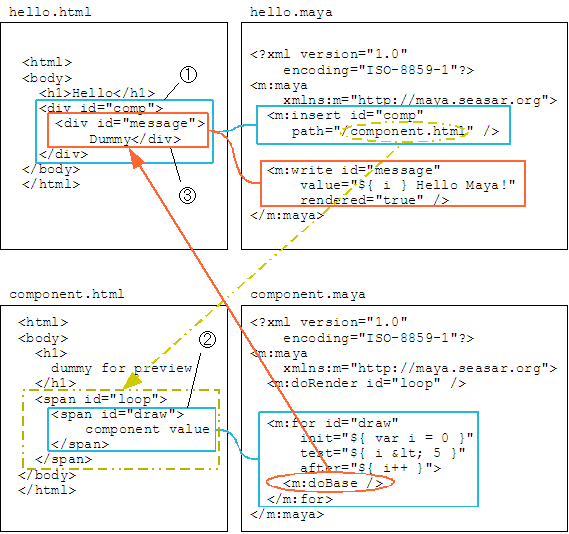

2-7. HTML 部品を使う (動的)
コンポーネントで動的な表示を扱ってみましょう。スクリプトを使う方法などは通常のテンプレートと同じですので、特別なのは親 (利用する側) のページとの値の受け渡しです。基本的な考え方としては、コンポーネントを利用する m:insert タグの位置に、コンポーネントの内容を直接書いた場合と同じです。
コンポーネントで親ページの変数を使う
次のサンプルはコンポーネント側で必要とする変数を決め、それを親ページ側であらかじめセットしておく方法のサンプルです。コンポーネントは "Hello Maya!" という文字列に続けて変数 count の内容を出力します。親ページは for プロセッサを使いコンポーネントを繰り返し使用します。そのときのループカウンタとして count を使うようにします。
hello.html<html> <body> <h1>Hello</h1> <div id="comp">dummy</div> </body> </html>hello.maya<?xml version="1.0" encoding="ISO-8859-1"?> <m:maya xmlns:m="http://maya.seasar.org"> <m:for id="comp" init="${ var count = 0 }" test="${ count < 5 }" after="${ count++ }"> <m:insert path="/component.html" /> </m:for> </m:maya>component.html<html> <body> <h1>dummy for preview</h1> <span id="centered"> <div id="message" style="text-align: center">component value</div> </span> </body> </html>component.maya<?xml version="1.0" encoding="ISO-8859-1"?> <m:maya xmlns:m="http://maya.seasar.org"> <m:doRender id="centered" /> <m:write id="message" value="Hello Maya! ${ count }" rendered="true" /> </m:maya>
ブラウザで http://localhost:8080/maya/hello.html にアクセスしてみましょう。
実行結果<html> <body> <h1>Hello</h1> <div id="message" style="text-align: center">Hello Maya! 0</div> <div id="message" style="text-align: center">Hello Maya! 1</div> <div id="message" style="text-align: center">Hello Maya! 2</div> <div id="message" style="text-align: center">Hello Maya! 3</div> <div id="message" style="text-align: center">Hello Maya! 4</div> </body> </html>
親テンプレート側の変数を素直に利用できていることがわかります。イメージとしては、JavaScript の変数スコープの考え方と同じです。もしコンポーネントの処理をするスコープで count という名前の変数がない場合、変数が見つからないというエラーが発生します。

親ページからコンポーネントに変数を渡す
親ページから変数を明示的にコンポーネントへ渡すこともできます。m:insert タグの属性として「変数名="値"」と書くことで、指定した変数をコンポーネントに渡すことになります。コンポーネントのタイトルやキャプションを指定する場合などに便利です。
渡された変数を参照する場合、${ binding.変数名 } と書きます。存在しない変数名を指定すると undefined が返ります。
hello.html<html> <body> <h1>Hello</h1> <div id="comp">dummy</div> </body> </html>hello.maya<?xml version="1.0" encoding="ISO-8859-1"?> <m:maya xmlns:m="http://maya.seasar.org"> <m:insert id="comp" path="/component.html" title="Component Title" /> </m:maya>component.html<html> <body> <h1>dummy for preview</h1> <span id="centered"> <h2><span id="componentTitle">Dummy Title</span></h2> <div id="message" style="text-align: center">component value</div> </span> </body> </html>component.maya<?xml version="1.0" encoding="ISO-8859-1"?> <m:maya xmlns:m="http://maya.seasar.org"> <m:doRender id="centered" /> <m:write id="componentTitle" value="${ binding.title }" /> <m:write id="message" value="Hello Maya!" rendered="true" /> </m:maya>実行結果<html> <body> <h1>Hello</h1> <h2>Component Title</h2> <div id="message" style="text-align: center">Hello Maya!</div> </body> </html>
この表記法のため、insert プロセッサが本来持つ属性名と同じ変数名 (たとえば id, path) はそのままでは使用できません。そのような変数を渡すには、属性の名前空間を maya の名前空間以外にします。
この変数の渡し方は、insert プロセッサの属性として正しくない属性を変数として扱うという仕組みのため、どんな名前空間を使っても問題ありません。プレフィクスを付けた場合でも、変数名には属性のローカル名 (プレフィクスの無い状態) が使われます。
独自の名前空間を作って割り当てるhello.maya<?xml version="1.0" encoding="ISO-8859-1"?> <m:maya xmlns:m="http://maya.seasar.org" xmlns:x="my_namespace"> <m:insert id="comp" path="/component.html" x:title="Component Title" /> </m:maya>
親ページの内容をコンポーネントの内側で出力する
コンポーネントに穴が開いているかのように、コンポーネントの内部で親ページの内容を出力できます。その際の変数スコープはコンポーネントの変数スコープの上になりますので、コンポーネントが定義した変数を親ページから参照することができます。
親コンポーネントのボディを実行するには、doBase プロセッサを使います。使い方は doBody プロセッサとほぼ同じで、doBase プロセッサを実行するタイミングで、insert プロセッサが割り当てられたタグのボディを親ページの maya ファイルと合わせて実行します。
次のサンプルは「親ページのボディを 5 回繰り返すコンポーネント」を使うサンプルです。親ページのボディでは、変数 i を使えます。
hello.html<html> <body> <h1>Hello</h1> <div id="comp"> <div id="message" style="text-align: center">Dummy</div> </div> </body> </html>hello.maya<?xml version="1.0" encoding="ISO-8859-1"?> <m:maya xmlns:m="http://maya.seasar.org"> <m:insert id="comp" path="/component.html" /> <m:write id="message" value="${ i } Hello Maya!" rendered="true" /> </m:maya>component.html<html> <body> <h1>dummy for preview</h1> <span id="loop"> <span id="draw">component value</span> </span> </body> </html>component.maya<?xml version="1.0" encoding="ISO-8859-1"?> <m:maya xmlns:m="http://maya.seasar.org"> <m:doRender id="loop" /> <m:for id="draw" init="${ var i = 0 }" test="${ i < 5 }" after="${ i++ }"> <m:doBase /> </m:for> </m:maya>実行結果<html> <body> <h1>Hello</h1> <div id="message" style="text-align: center">0 Hello Maya!</div> <div id="message" style="text-align: center">1 Hello Maya!</div> <div id="message" style="text-align: center">2 Hello Maya!</div> <div id="message" style="text-align: center">3 Hello Maya!</div> <div id="message" style="text-align: center">4 Hello Maya!</div> </body> </html>
一度出力対象を親ページに戻すため、動作は通常のコンポーネントよりもやや複雑になります。

request, session で値を共有する
もちろん、request や session を使って値を共有することもできます。特別なことは何もありませんので説明は省略します。